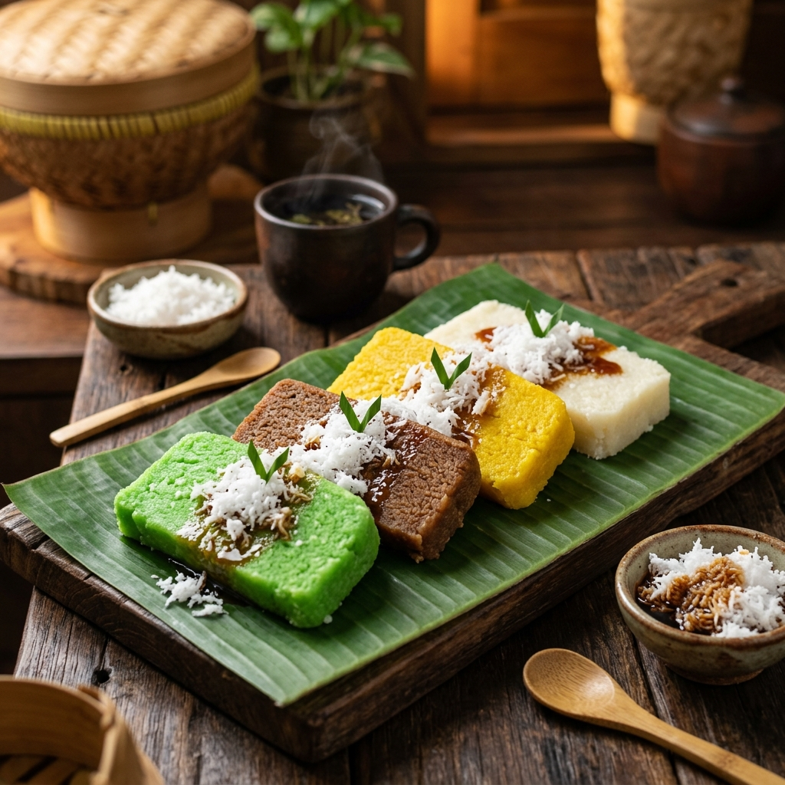
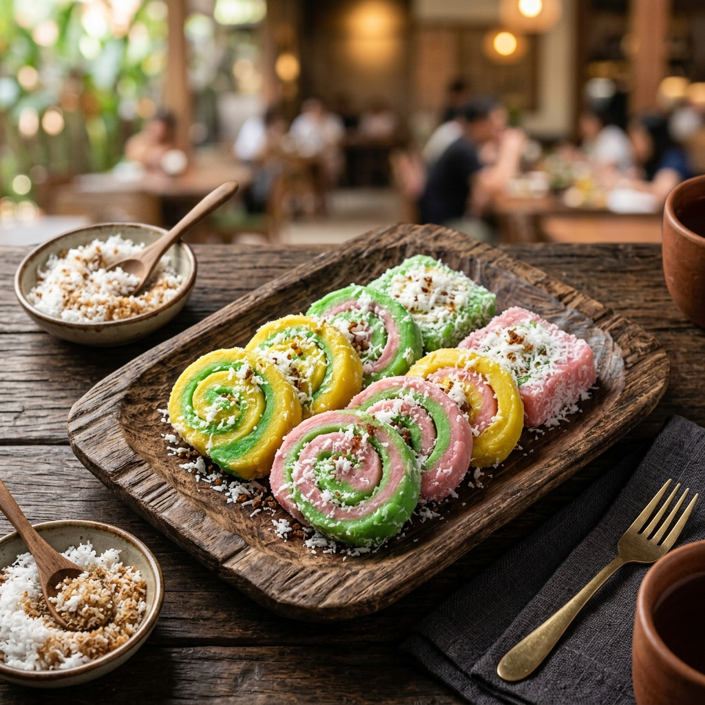

Nikmati sajian autentik Getuk Sarinah yang lumer di mulut. Kami juga menghadirkan Lauk Praktis Ayam & Bebek Ungkep siap goreng untuk hidangan keluarga Anda.


Getuk Sarinah bermula dari dapur sederhana keluarga kami, membawa resep autentik yang terus dijaga ketat kualitasnya. Kami percaya bahwa makanan tradisional Indonesia memiliki tempat spesial di hati setiap keluarga.
Dengan memadukan bahan baku alami pilihan, singkong segar berkualitas, dan proses pembuatan yang sangat higienis, kami menyajikan Getuk dengan tingkat kelembutan yang pas, serta rasa manis yang alami dan tidak berlebihan di lidah.
Dibuat fresh setiap hari dengan bahan-bahan premium pilihan.
Varian klasik paling favorit. Terbuat dari singkong segar, ditumbuk sangat halus, dipadukan gula aren asli, dan disajikan dengan taburan kelapa parut kukus yang gurih meresap.
Hanya menggunakan bahan segar tanpa tambahan pengawet, pewarna, atau pemanis buatan kimia.
Proses produksi dilakukan di dapur standar tinggi untuk memastikan keamanan pangan keluarga Anda.
Bekerjasama dengan kurir instan untuk menjamin getuk sampai di tangan Anda dalam kondisi paling segar.
Berikut beberapa pertanyaan yang sering diajukan pelanggan kami.
Karena kami tidak menggunakan pengawet, Getuk Sarinah tahan 1 hari (24 jam) di suhu ruang yang sejuk, dan tahan hingga 3 hari jika disimpan di dalam wadah tertutup di dalam kulkas (chiller).
Untuk produk Getuk, kami sangat menyarankan pengiriman instan (seperti GoSend atau GrabExpress) agar produk diterima dalam keadaan fresh. Pengiriman keluar kota saat ini hanya berlaku untuk produk Frozen Food (Ayam/Bebek Ungkep) menggunakan Paxel.
Tentu saja! Kami sering melayani pesanan dalam partai besar untuk berbagai acara. Silakan hubungi admin WhatsApp kami minimal H-3 sebelum acara untuk mendapatkan penawaran harga khusus.
Punya pertanyaan atau ingin langsung memesan? Jangan ragu untuk menghubungi kami melalui kontak di bawah ini.